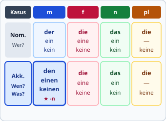

Akkusativ und Artikel
Mit einem KI-Tutor lernen
Ein KI-Tutor erklärt dir diese Seite und hilft dir bei den Aufgaben. Wähl deinen Assistenten:
Mit Claude öffnen Mit ChatGPT öffnen Mit Mistral Vibe öffnen
Du nutzt dein eigenes Konto beim Anbieter. Der Assistent ist kein Angebot von lernapps.net: lernapps liefert nur Inhalte und Aufgaben. Die Wahl gilt für alle Seiten, nur auf diesem Gerät.
Geschenke für Familie Weber
Peter kauft in der Lindenberger Innenstadt kleine Geschenke für Familie Weber. In Peter kauft einen Rucksack ist Peter das Subjekt (Nominativ — Wer?) und einen Rucksack das direkte Objekt (Akkusativ — Wen oder was?). Die gute Nachricht: Im Akkusativ ändert sich nur Maskulin!

© CC0-1.0Zeile 2 kommt dazu: Nur in der blauen Maskulin-Spalte wird aus der/ein/kein → den/einen/keinen.
Typische Verben mit Akkusativ
Verben wie haben, kaufen, suchen, brauchen, sehen, finden, nehmen, lesen verlangen ein Akkusativobjekt: Peter sucht den Schlüssel. Er kauft einen Ball, eine Tasche und ein Buch. Er hat keinen Regenschirm.
Übung
Aufgabe
Wähle den passenden Artikel im Akkusativ.
- Peter needs a pencil (der Bleistift). → Peter braucht … Bleistift.
- Nadia takes the guitar (die Gitarre). → Nadia nimmt … Gitarre.
- Lukas finds the football (der Fußball). → Lukas findet … Fußball.
- Peter buys a notebook (das Heft). → Peter kauft … Heft.
Lösung
- Peter braucht einen Bleistift.
- Nadia nimmt die Gitarre.
- Lukas findet den Fußball.
- Peter kauft ein Heft.
Nur maskuline Nomen wechseln im Akkusativ zu den / einen / keinen.
Aufgabe
Ergänze den passenden Artikel im Akkusativ (den, einen, eine, ein, keinen).
- Peter buys a backpack (der Rucksack). → Peter kauft … Rucksack.
- He sees the desk (der Schreibtisch). → Er sieht … Schreibtisch.
- Mina reads a newspaper (die Zeitung). → Mina liest … Zeitung.
- Lukas has no ball (der Ball). → Lukas hat … Ball.
Lösung
- Peter kauft einen Rucksack.
- Er sieht den Schreibtisch.
- Mina liest eine Zeitung.
- Lukas hat keinen Ball.
Im Akkusativ ändert sich nur Maskulin (der→den, ein→einen, kein→keinen). Feminin, Neutrum und Plural bleiben gleich.
Aufgabe
Lösung
Peter richtige Antwort
Richtig! *Den Stuhl* steht zwar vorne, ist aber wegen *den* klar der Akkusativ. *Peter* ist das Subjekt.
Den Stuhl
*den* zeigt den Akkusativ an. Im Deutschen zeigen die Fälle die Rolle — nicht immer die Wortstellung!
heute
*heute* ist eine Zeitangabe, kein Subjekt.
Der Artikel *den* markiert den Akkusativ eindeutig — auch wenn das Objekt vor dem Verb steht.
Aufgabe
Lösung
Richtige Antwort: Die Aussage stimmt nicht.
Falsch! Im Akkusativ ändert sich **nur Maskulin** (*der → den*). Feminin (*die*), Neutrum (*das*) und Plural (*die*) bleiben genau wie im Nominativ.
Fehler gefunden oder eine Idee für diese App?